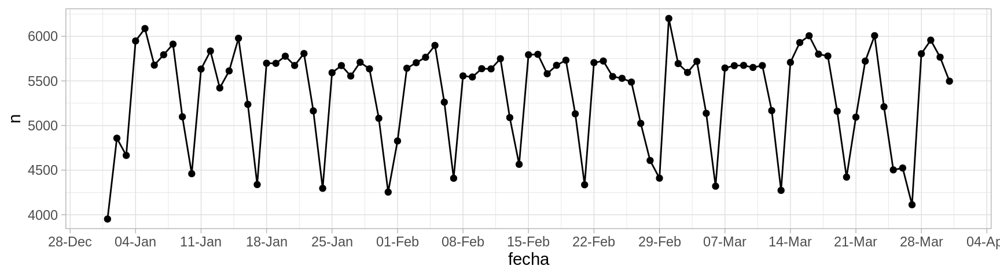
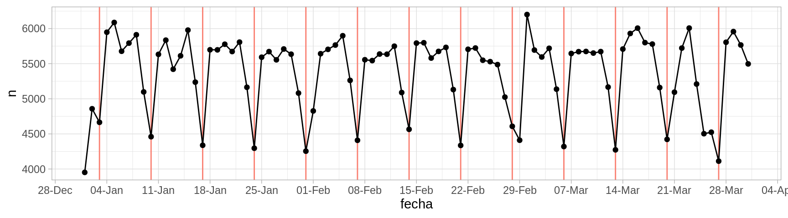

Código
library(tidyverse)
library(lubridate)
library(kableExtra)
ggplot2::theme_set(ggplot2::theme_light())
nacimientos <- read_rds("datos/nacimientos/natalidad.rds") |>
ungroup() |>
filter(year(fecha) == 2016, month(fecha) <= 3)Cuando observamos un conjunto de datos, independientemente de su tamaño, el paso inicial más importante es entender bajo qué proceso se generan los datos.
Comenzamos con un ejemplo de análisis exploratorio. Consideremos una parte de los datos de nacimientos por día del INEGI de 1999 a 2016. Consideraremos sólo tres meses: enero a marzo de 2016. Estos datos, por su tamaño, pueden representarse de manera razonablemente efectiva en una visualización de serie de tiempo
library(tidyverse)
library(lubridate)
library(kableExtra)
ggplot2::theme_set(ggplot2::theme_light())
nacimientos <- read_rds("datos/nacimientos/natalidad.rds") |>
ungroup() |>
filter(year(fecha) == 2016, month(fecha) <= 3)Examinamos partes del contenido de la tabla:
tab_1 <- nacimientos |>
select(fecha, n) |>
slice_head(n = 5)
tab_2 <- nacimientos |>
select(fecha, n) |>
slice_tail(n = 5)
kable(list(tab_1, tab_2)) |> kable_styling()
|
|
En un examen rápido de estos números no vemos nada fuera de orden. Los datos tienen forma de serie de tiempo regularmente espaciada (un dato para cada día). Podemos graficar de manera simple como sigue:
ggplot(nacimientos, aes(x = fecha, y = n)) +
geom_point() +
geom_line() +
scale_x_date(breaks = "1 week", date_labels = "%d-%b") 
Esta es una descripción de los datos, que quizá no es muy compacta pero muestra varios aspectos importantes. En este caso notamos algunos patrones que saltan a la vista. Podemos marcar los domingos de cada semana:
domingos_tbl <- nacimientos |>
filter(weekdays(fecha) == "Sunday")
ggplot(nacimientos, aes(x = fecha, y = n)) +
geom_vline(aes(xintercept = fecha), domingos_tbl, colour = "salmon") +
geom_point() +
geom_line() +
scale_x_date(breaks = "1 week", date_labels = "%d-%b") 
Observamos que los domingos ocurren menos nacimientos y los sábados también ocurren relativamente menos nacimentos. ¿Por qué crees que sea esto?
Adicionalmente a estos patrones observamos otros aspectos interesantes:
La confirmación de estas hipótesis, dependiendo de su forma, puede ser relativamente simple (por ejemplo ver una serie más larga de domingos comparados con otros días de la semana) hasta muy compleja (investigar preferencias de madres, de doctores o de hospitales, costumbres y actitudes, procesos en el registro civil, etc.) En todo caso, una descripción correcta de estos datos requiere conocer tanto hechos generales como conocimiento detallado de prácticas relacionadas con la natalidad y el registro de nacimientos.
Este es un estudio real acerca de tratamientos para cálculos renales (Julious y Mullee (1994)). Pacientes se asignaron de una forma no controlada a dos tipos de tratamientos para reducir cálculos renales. Para cada paciente, conocemos el tipo de ćalculos que tenía (grandes o chicos) y si el tratamiento tuvo éxito o no.
La tabla original tiene 700 renglones (cada renglón es un paciente)
calculos <- read_csv("./datos/kidney_stone_data.csv")
names(calculos) <- c("tratamiento", "tamaño", "éxito")
calculos <- calculos |>
mutate(tamaño = ifelse(tamaño == "large", "grandes", "chicos")) |>
mutate(resultado = ifelse(éxito == 1, "mejora", "sin_mejora")) |>
select(tratamiento, tamaño, resultado)
nrow(calculos)[1] 700y se ve como sigue (muestreamos algunos renglones):
calculos |>
sample_n(20) |> kable() |>
kable_paper(full_width = FALSE)| tratamiento | tamaño | resultado |
|---|---|---|
| B | grandes | mejora |
| B | grandes | mejora |
| B | chicos | mejora |
| B | chicos | mejora |
| B | grandes | mejora |
| A | chicos | mejora |
| A | grandes | mejora |
| B | chicos | mejora |
| A | chicos | mejora |
| A | grandes | sin_mejora |
| B | chicos | mejora |
| B | chicos | mejora |
| A | grandes | mejora |
| B | chicos | mejora |
| A | grandes | mejora |
| A | chicos | mejora |
| A | grandes | sin_mejora |
| A | grandes | sin_mejora |
| A | grandes | mejora |
| B | chicos | mejora |
Aunque estos datos contienen información de 700 pacientes, los datos pueden resumirse sin pérdida de información contando como sigue:
calculos_agregada <- calculos |>
group_by(tratamiento, tamaño, resultado) |>
count()
calculos_agregada |> kable() |>
kable_paper(full_width = FALSE)| tratamiento | tamaño | resultado | n |
|---|---|---|---|
| A | chicos | mejora | 81 |
| A | chicos | sin_mejora | 6 |
| A | grandes | mejora | 192 |
| A | grandes | sin_mejora | 71 |
| B | chicos | mejora | 234 |
| B | chicos | sin_mejora | 36 |
| B | grandes | mejora | 55 |
| B | grandes | sin_mejora | 25 |
Este resumen no es muy informativo, pero al menos vemos qué valores aparecen en cada columna de la tabla. Como en este caso nos interesa principalmente la tasa de éxito de cada tratamiento, podemos mejorar mostrando como sigue:
calculos_agregada |> pivot_wider(names_from = resultado, values_from = n) |>
mutate(total = mejora + sin_mejora) |>
mutate(prop_mejora = round(mejora / total, 2)) |>
select(tratamiento, tamaño, total, prop_mejora) |>
arrange(tamaño) |>
kable() |>
kable_paper(full_width = FALSE)| tratamiento | tamaño | total | prop_mejora |
|---|---|---|---|
| A | chicos | 87 | 0.93 |
| B | chicos | 270 | 0.87 |
| A | grandes | 263 | 0.73 |
| B | grandes | 80 | 0.69 |
Esta tabla descriptiva es una reescritura de los datos, y no hemos resumido nada todavía. Pero es apropiada para empezar a contestar la pregunta:
Supongamos que otro analista decide comparar los pacientes que recibieron cada tratamiento, ignorando la variable de tamaño:
calculos |> group_by(tratamiento) |>
summarise(prop_mejora = mean(resultado == "mejora") |> round(2)) |>
kable() |>
kable_paper(full_width = FALSE)| tratamiento | prop_mejora |
|---|---|
| A | 0.78 |
| B | 0.83 |
y parece ser que el tratamiento \(B\) es mejor que el \(A\). Esta es una paradoja (un ejemplo de la paradoja de Simpson) . Si un médico no sabe que tipo de cálculos tiene el paciente, ¿entonces debería recetar \(B\)? ¿Si sabe debería recetar \(A\)? Esta discusión parece no tener mucho sentido.
Podemos investigar por qué está pasando esto considerando la siguiente tabla, que solo examina cómo se asignó el tratamiento dependiendo del tipo de cálculos de cada paciente:
calculos |> group_by(tratamiento, tamaño) |> count() |>
kable() |>
kable_paper(full_width = FALSE)| tratamiento | tamaño | n |
|---|---|---|
| A | chicos | 87 |
| A | grandes | 263 |
| B | chicos | 270 |
| B | grandes | 80 |
Nuestra hipótesis aquí es que la decisión de qué tratamiento usar depende del tamaño de los cálculos. En este caso, hay una decisión pues A es una cirugía y B es un procedimiento menos invasivo, y se prefiere utilizar el tratamiento \(A\) para cálculos grandes, y \(B\) para cálculos chicos. Esto quiere decir que en la tabla total el tratamiento \(A\) está en desventaja porque se usa en casos más difíciles, pero el tratamiento \(A\) parece ser en general mejor. La razón es probablemente un proceso de optimización de recursos y riesgo que hacen los doctores.
Igual que en el ejemplo anterior, los resúmenes descriptivos están acompañados de hipótesis acerca del proceso generador de datos, y esto ilumina lo que estamos observando y nos guía hacia descripciones provechosas de los datos. Las explicaciones no son tan simples y, otra vez, interviene el comportamiento de doctores, tratamientos, y distintos tipos de padecimientos.
Contrastemos el ejemplo anterior usando exactamente los mismos datos, pero con una interpretación diferente. En este caso, los tratamientos son para mejorar alguna enfermedad del corazón. Sabemos que parte del efecto de este tratamiento ocurre gracias a una baja en presión arterial de los pacientes, así que después de administrar el tratamiento, se toma la presión arterial de los pacientes. Ahora tenemos la tabla agregada y desagregada como sigue:
corazon <- calculos |>
select(tratamiento, presión = tamaño, resultado) |>
mutate(presión = ifelse(presión == "grandes", "alta", "baja"))
corazon_agregada <- corazon |>
group_by(tratamiento, presión, resultado) |>
count()
corazon_agregada |> pivot_wider(names_from = resultado, values_from = n) |>
mutate(total = mejora + sin_mejora) |>
mutate(prop_mejora = round(mejora / total, 2)) |>
select(tratamiento, presión, total, prop_mejora) |>
arrange(presión) |>
kable() |>
kable_paper(full_width = FALSE)| tratamiento | presión | total | prop_mejora |
|---|---|---|---|
| A | alta | 263 | 0.73 |
| B | alta | 80 | 0.69 |
| A | baja | 87 | 0.93 |
| B | baja | 270 | 0.87 |
corazon |> group_by(tratamiento) |>
summarise(prop_mejora = mean(resultado == "mejora") |> round(2)) |>
kable() |>
kable_paper(full_width = FALSE)| tratamiento | prop_mejora |
|---|---|
| A | 0.78 |
| B | 0.83 |
¿Cuál creemos que es el mejor tratamiento en este caso? ¿Deberíamos usar la tabla agregada o la desagregada por presión?